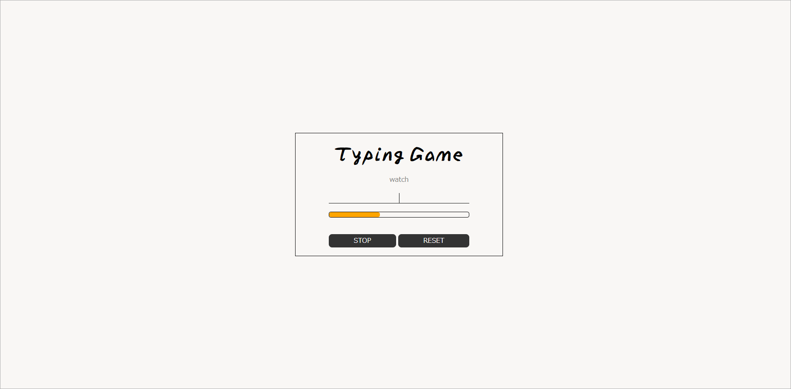

scroll

 ×
×
- コンセプト
- 晴れやかで親しみやすさを表現したポートフォリオ
- 制作の目的
- 私のことや制作実績、現在のスキルを紹介するために制作しました。
- 制作担当
- デザイン / コーディング
- 制作期間
- 2週間
- 使用言語
- HTML / CSS / JavaScript / jQuery
- URL
- ポートフォリオ
- 見どころ
- 見やすさを追求した実績紹介やレスポンシブ対応のシンプルで統一感のあるデザイン
- エピソード
- 『見心地』の良さを重視するため、色味を抑えてシンプルな作りにしました。優しいカラーやナチュラルを表現したトップイメージを使用し、柔らかいふんわりとした印象に仕上げました。また、アニメーションで動きを加え、柔らかさの中のスマートさを表現しました。
 ×
×
- コンセプト
- 使用感を追求した飽きの来ないタスク管理アプリ
- 制作の目的
- 情報の整理や優先順位などを流動的に管理するために制作しました。
- 制作担当
- デザイン / コーディング
- 制作期間
- 1週間
- 使用言語
- HTML / CSS (Bootstrap) / JavaScript (Vue.js)
- URL
- たすくん
- 見どころ
- Bootstrapによるレスポンシブ対応とドラッグ＆ドロップでのフォーム移動
- エピソード
- 直観的に操作できるようタスクの移動方法にドラッグ&ドロップを採用しました。完了したタスクはリストとして一目で確認することができます。

×
- コンセプト
- タイピングゲーム
- 制作の目的
- Vue.jsで頻出する用語を楽しく理解するために制作しました。
- 制作担当
- デザイン / コーディング
- 制作期間
- 3日間
- 使用言語
- HTML / CSS (Bootstrap) / JavaScript (Vue.js)
- URL
- タイピン
- 見どころ
- Vue.jsで使用される用語が問題として出題され、正解ごとにゲージが増加
- エピソード
- ゲーム感覚でタイピング・用語に慣れられるようにと作成しました。問題はランダムで出題されるので繰り返し遊んでいただけます。